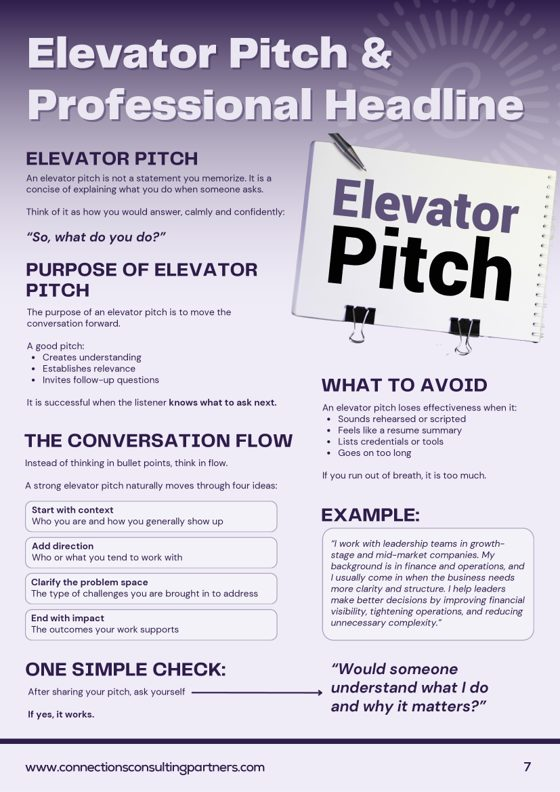
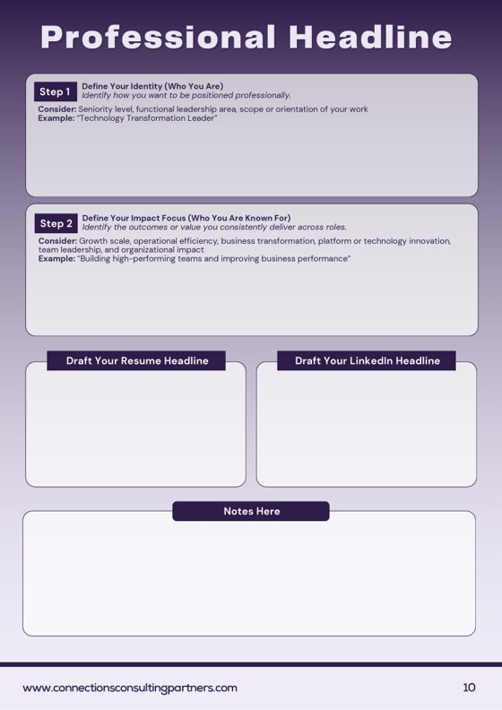
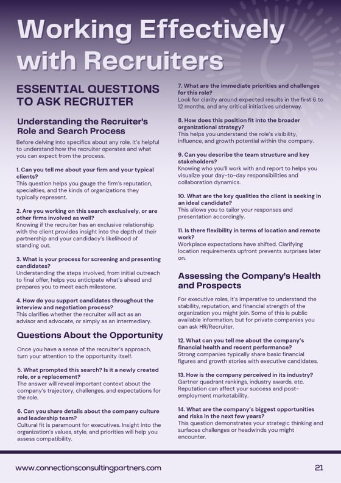

STEP 2 · AFTER FUNDAMENTALS
Run your job search like a sales pipeline
Three hours on running the search: tracking, your pitch, referrals, recruiters, interviews and salary.
For people who've completed LIT Fundamentals.
STEP 2 · AFTER FUNDAMENTALS
Three hours on running the search: tracking, your pitch, referrals, recruiters, interviews and salary.
For people who've completed LIT Fundamentals.
Good salespeople don't wait for leads to arrive. They keep a list of prospects, follow up, qualify each one, and know what to say when it's time to close.
Advanced applies that to your search, starting from the resume and profile you rewrote in Fundamentals. Bring one job posting you'd like to land. You build your Job Qualification Matrix against it. The handouts and workbook pages go home with you to keep using.
YOUR SEARCH AS A PIPELINE
The session follows these four stages in order.
Three hours, seven topics, from first contact to offer
When to ask, who to ask, and how to use them.
Built against the job posting you bring.
Worked from 25 sample interview questions.
QUALIFY
Bring a posting you want. In the session you pull out what the role needs most, then match each requirement to something you've actually done.
It becomes your interview prep and the outline for tailoring your resume to that role.
| Job requirement or skill | Your example of demonstrated experience |
|---|---|
| Leading large-scale initiatives | Directed multi-year transformation program improving operational performance |
| Stakeholder influence at executive level | Partnered with senior leaders to align cross-functional strategic priorities |
| Financial accountability | Managed budgets and performance targets tied to business outcomes |
| From your posting | Your example |



The workbook pages and tools for each stage of the pipeline, to keep working from after the session.
Bring one job posting you'd like to land. We use it to build your Job Qualification Matrix.
Have your current list of opportunities handy for the tracker.
Kate is the Founder of Connections Consulting Partners, a Raleigh recruiting firm that places technical, sales and leadership talent. She also hosts Leaders in Transition, a community for executives in a job search.
Kate teaches every workshop herself. She holds a LinkedIn Recruiter seat and fills real roles with it, so the advice comes from the side of the desk that does the hiring.
YOUR NEXT STEP
Build your personal or executive brand
Opens once you've completed Advanced. Next date: Tue 27 Oct.
Yes. Advanced is open to people who've completed Fundamentals.
The Job Tracker, the workbook pages for each topic, and lists of executive search and IT staffing firms.
Yes. Everyone who books gets the recording afterward.
Live on Zoom. You'll get the link before the session.
We'll move your seat to next month's date. Refunds are available up to 24 hours before the workshop, as long as the workbook hasn't been sent.
Each workshop needs three people to run. If a date has fewer, it moves to the next month and your seat moves with it.
11:00am to 2:00pm ET on Zoom. Up to 15 people. Open to people who've completed LIT Fundamentals.
Book my seat, $350